来源：https://iy8tus37tl.feishu.cn/docx/GZNbdJrGPojUSAxTTPiceLUonbb
现在小学基本都会有随堂测评，测评结束之后，老师需要及时查询当堂的学生测评结果，传统的方式是老师收集试卷，进行统计结果汇总，但是这种方式，比较费时费力
现在需要借助AI，实现对课堂测评的及时统计分析
功能1：通过网页链接，调用摄像头，拍照后，上传图片
（点击上传后，调用coze的API，执行coze部分功能1，图片识别并录入数据库）
让cursor用HTML编写前端代码，可以直接将页面UI给cursor，自动生成前端代码，并执行coze函数调用
智能体部分主要有三个模块：
1、数据库：①用于存放学生长传图片的解析结果；②用于统计分析的数据源
2、工作流：完成指定任务
3、智能体：根据指令调用相关工作流
最终的结果需要展示的内容有：
1、统计（每个小组）共收集到多少份报告——小组、学生姓名
2、每题，每个维度的评价——题目、评价维度、分数
3、查看评价单——图片的链接
根据需要，将数据库的结构增加小组、学生姓名、题目、评价维度、分数和图片链接字段
（在coze的资源库中添加“数据库”，增加对应的字段）
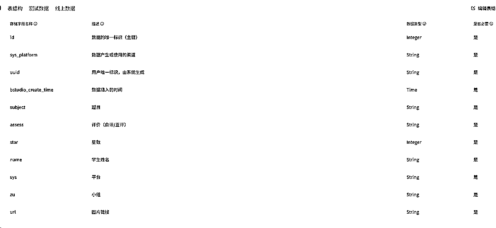
从coze智能体看，主要有四个功能，因此需要有四个工作流：
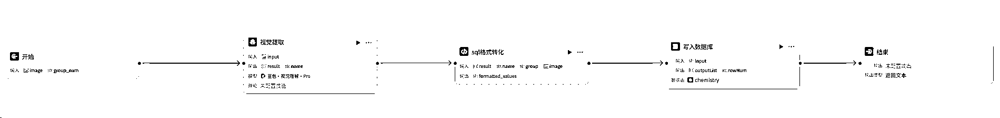
1、开始节点：因为学生是拍照上传，所以设置图片格式；手动输入小组，防止分组识别错误
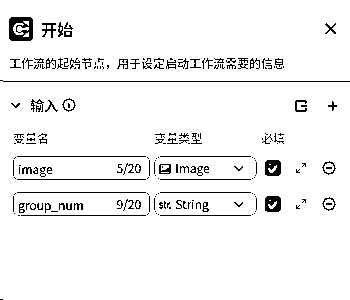
2、信息提取节点：图片信息提取用的是视觉模型
（因为拍照上传不规范，有横屏，也有竖屏，用OCR的方式无法准确提取信息，采用视觉模型）
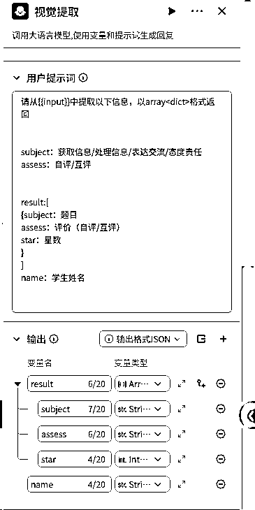
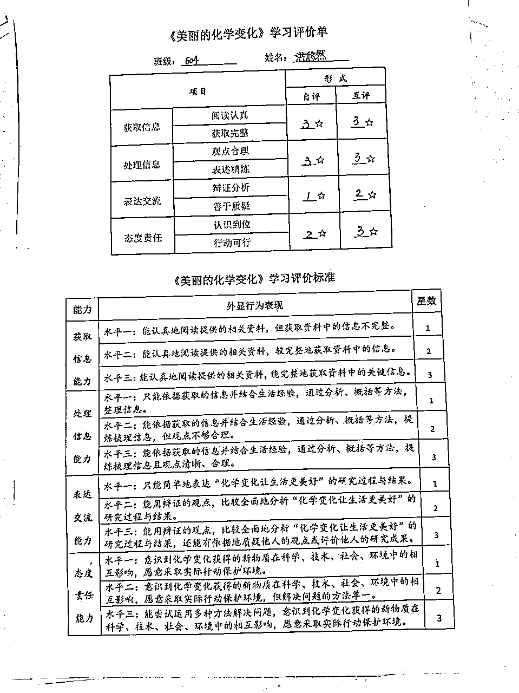
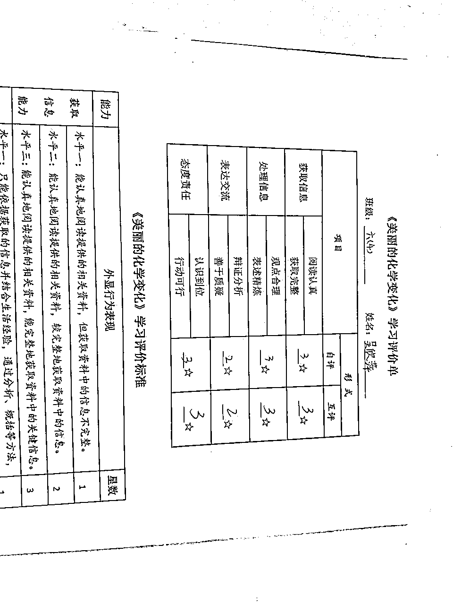
3、格式整理：将提取的信息整理为sql格式，后续数据导入使用
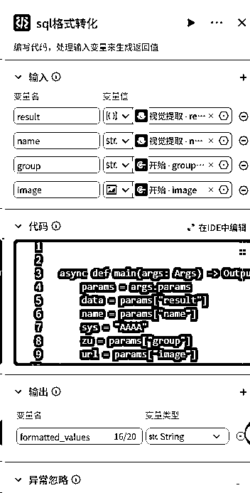
async def main(args: Args) -> Output:
params = args.params
data = params["result"]
name = params["name"]
sys = "AAAA"
zu = params["group"]
url = params["image"]
values = []
for item in data:
subject = item["subject"]
assess = item["assess"]
star = item["star"]
values.append(f"('{subject}', '{assess}', {star},'{name}','{sys}','{zu}','{url}')")
formatted_values = ',\n'.join(values) + ';'
# print(formatted_values)
# 构建输出对象
ret: Output = {
"formatted_values":formatted_values
}
return ret
4、导入数据库：选择之前建立的数据库
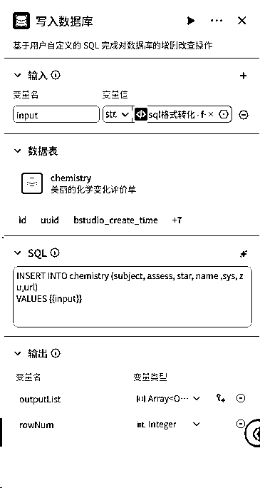
5、结束
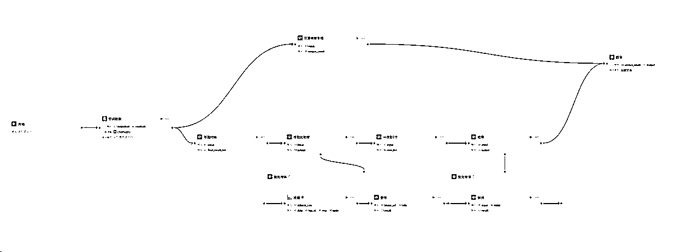
当教师端点击“查看结果”时，直接调用工作流
1、开始节点：无需输入，调用工作流立即执行
2、数据库查询节点：直接取数据库的所有结果
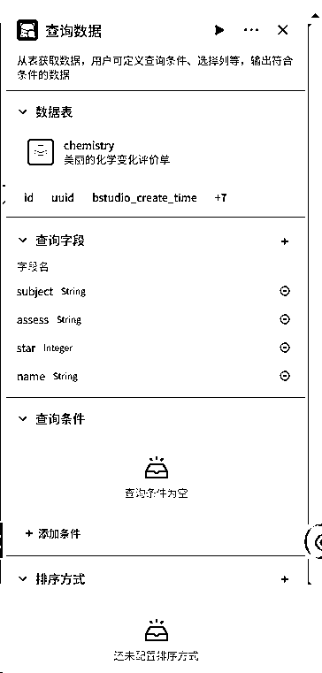
3、绘制饼图：采用的coze的图表大师（echarts自定义插件）
①先将需要数据进行处理整理为echarts的格式
②批量调用echats插件，生成图表
③将图表标题和链接整理为一个组合
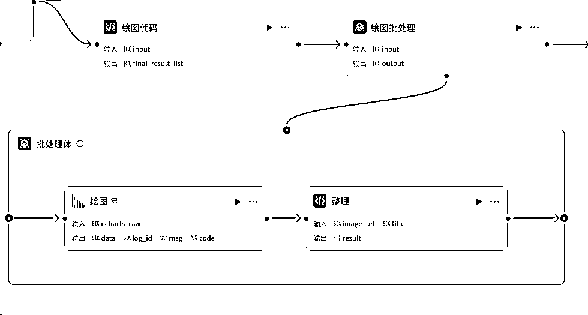
echarts的饼图代码如下（可以让cursor帮忙写）
因为我有固定顺序，所以加了限制条件
async def main(args: Args) -> Output:
params = args.params
data = params["input"]
# 获取 subject 和 assess 的去重值
subjects = set()
assesses = set()
for record in data:
subjects.add(record["subject"])
assesses.add(record["assess"])
# 按照指定顺序排列 subjects
ordered_subjects = ["获取信息", "处理信息", "表达交流", "态度责任"]
ordered_subjects = [s for s in ordered_subjects if s in subjects]
# 按照指定顺序排列 assesses
ordered_assesses = ["互评", "自评"]
ordered_assesses = [a for a in ordered_assesses if a in assesses]
# 存储最终结果的列表
final_result_list = []
# 定义颜色列表，用于饼图的不同部分
colors = ["#FF6347", "#4682B4", "#32CD32", "#FFD700", "#FF4500"]
for subject in ordered_subjects:
for assess in ordered_assesses:
star_count = {}
for record in data:
if record["subject"] == subject and record["assess"] == assess:
star = record["star"]
if star not in star_count:
star_count[star] = 0
star_count[star] += 1
# 将 star 转换为对应的星号表示并准备饼图数据
pie_data = []
for i, (star, count) in enumerate(star_count.items()):
star_symbol = "★" if star == "1" else "★★" if star == "2" else "★★★"
color_index = i % len(colors) # 循环使用颜色
pie_data.append({
"name": star_symbol,
"value": count,
"itemStyle": {"color": colors[color_index]}
})
# 构建 ECharts 配置
chart_config = {
"backgroundColor": "#ffffff", # 添加白色背景
"title": {
"text": f"{subject}'{assess}'分析",
"subtext": "",
"left": "center"
},
"tooltip": {
"trigger": "item",
"formatter": "{a}
{b}: {c} ({d}%)"
},
"legend": {
"top": "10%",
"right": "10%",
"textStyle": {
"fontSize": 16, # 增大图例文字大小
"fontWeight": "bold" # 加粗图例文字
}
},
"series": [
{
"name": f"{subject}{assess}评价",
"type": "pie",
"radius": "55%",
"center": ["50%", "60%"],
"data": pie_data,
"label": {
"show": True,
"formatter": "{b}\n{d}%",
"color": "#333",
"fontSize": 16, # 增大标签文字大小
"fontWeight": "bold" # 加粗标签文字
},
"labelLine": {
"show": True
},
"emphasis": {
"itemStyle": {
"shadowBlur": 10,
"shadowOffsetX": 0,
"shadowColor": "rgba(0, 0, 0, 0.5)"
}
}
}
]
}
# 构建字典并添加到最终结果列表
result_dict = {
"title": f"{subject}'{assess}'分析",
"content": chart_config
}
final_result_list.append(result_dict)
# 构建输出对象
ret: Output = {
"final_result_list": final_result_list
}
return ret
4、结果整理：根据最终的展示结果进行提前整理
需要的是每道题目，将自评和互评一起输出，所以，我先将相同的题目的图片结果打包，然后后续使用
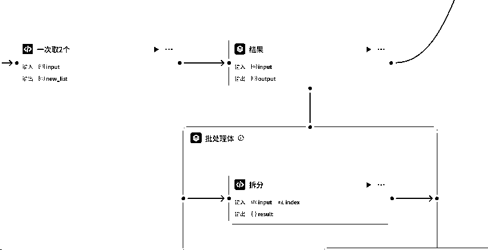
5、统计份数：因为最后输出统计的份数，所以在绘图的同时，需要统计学生的数量
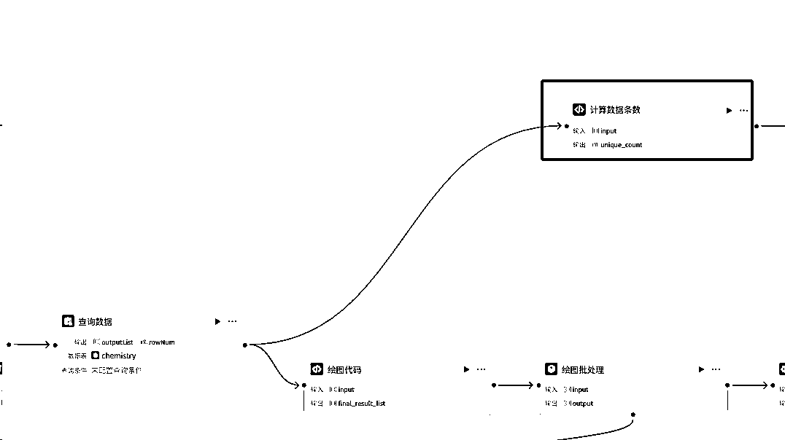
6、结束：需要图片在页面中直接展示，所以输出的是markdown格式
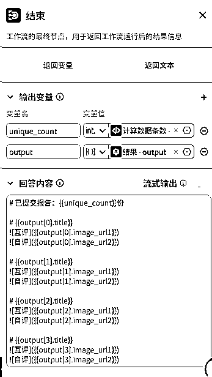
评价单主要是分组查看，
要求先展示每个小组的统计数量；并且按照小组进行图片缩略图展示，点击放大图片查看详情（在HTML实现）
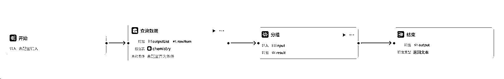
1、开始节点：接收“查看评价”的指令，立即执行，无需输入
2、查询数据库：直接查询需要的小组、图片链接
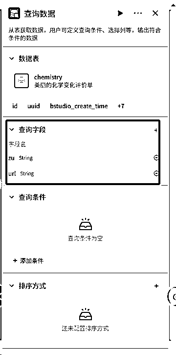
3、格式整理：
统计份数，并且按照小组将图片链接分组
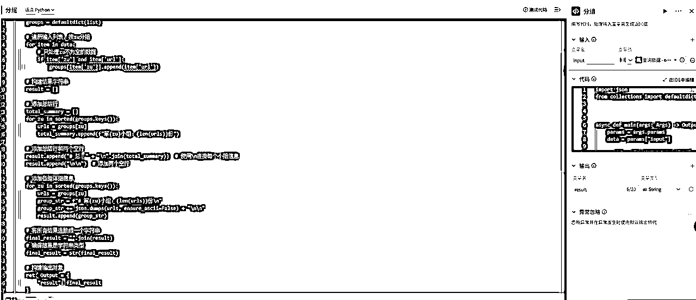
4、结束：直接输出分组的结果
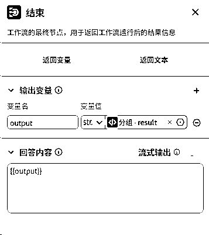
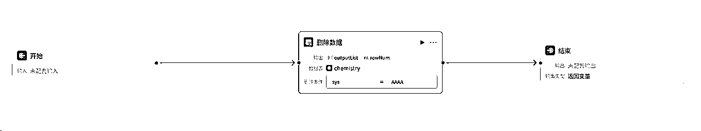
直接使用删掉数据节点即可
将之前搭建的四条工作流添加进来，并设置回复逻辑
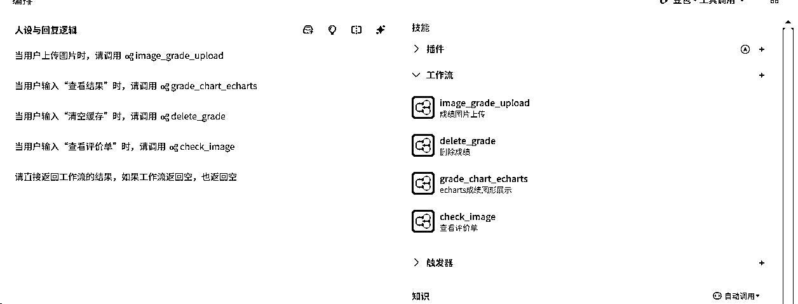
发布的时候，一定选择API或者sdk的渠道
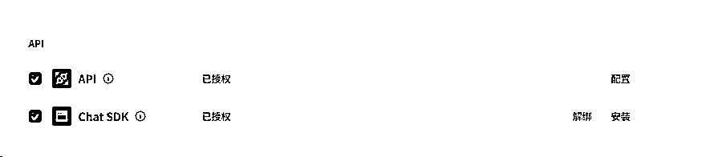
教师端主要三个按钮，点击对应的按钮，直接发送指令给智能体，返回智能体的结果
点击“查看结果”，图片点击可以放大
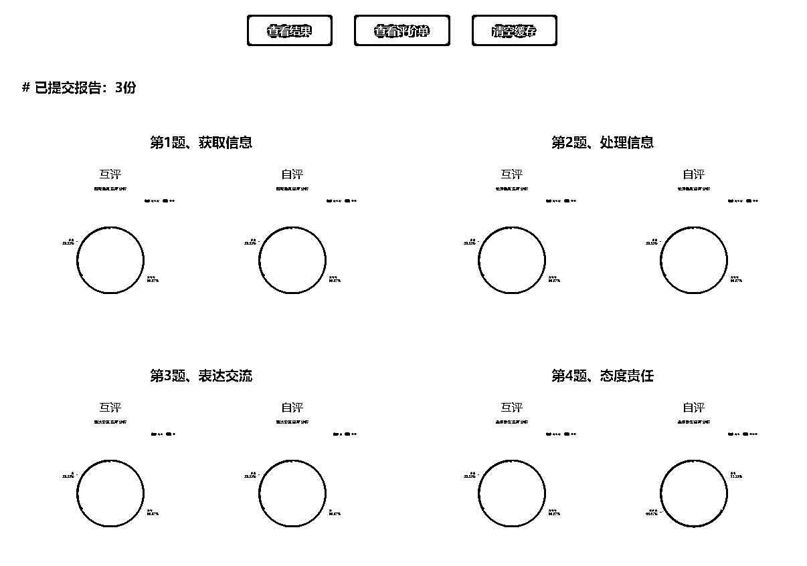
点击“查看评价单”，图片点击可以放大
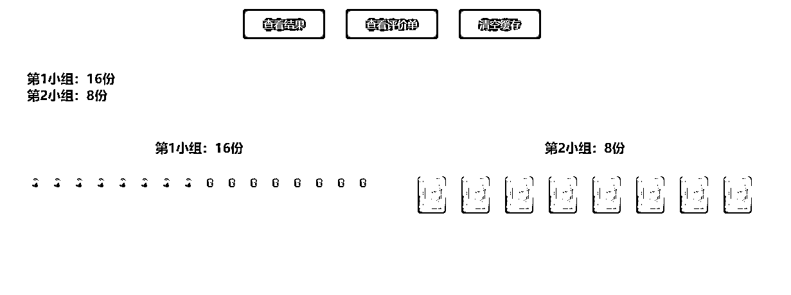
AI的发展一定在现有的细分场景下，服务并便利于现有的流程
欢迎大家一起交流细分场景的业务赋能